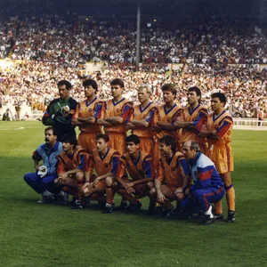

From a small group of football enthusiasts in a café to the most decorated club in the world — the Barça story.
FCB
Club History
The Barça Story
The Founding
The founders of FC Barcelona, 1899
Joan Gamper, a Swiss businessman, placed an advert in a Barcelona sports magazine seeking players. On 29 November 1899, FC Barcelona was officially founded at the Gimnàs Solé in Barcelona. The founding members included players from Switzerland, England, and Spain — a multicultural club from the very start.
Gamper Saves the Club
Financial difficulties threatened the club's existence. Joan Gamper stepped in as president and rebuilt the club from near collapse, laying the foundations for growth. He would serve five separate terms as president.
A New Home: Les Corts
Barcelona moved into their new stadium, Les Corts, which had an initial capacity of around 22,000, reflecting the club's growing support base across Catalonia and beyond.
Political Defiance
During the Primo de Rivera dictatorship, Barcelona fans jeered the Spanish national anthem at Les Corts. The club was suspended for six months. Even then, the club was inseparable from Catalan identity and resistance.
The Franco Years
Under Franco's regime, the club was forced to drop the Catalan cross from its badge and rename itself "Club de Fútbol Barcelona." Yet the club secretly preserved its Catalan identity, becoming a refuge for Catalan culture and pride.
Camp Nou Opens
Camp Nou, home of FC Barcelona since 1957
On 24 September 1957, Barcelona inaugurated Camp Nou (then simply Estadio del FC Barcelona), one of the largest football stadiums in the world with a capacity of over 90,000. It replaced the aging Les Corts ground.
1960s
The Di Stéfano Affair
FIFA and the Spanish federation controversially awarded Alfredo Di Stéfano to Real Madrid after both clubs had agreed a sharing deal, inflaming the rivalry between the two clubs and becoming one of football's most bitter controversies.
Johan Cruyff Arrives
Johan Cruyff in Barcelona colours
Dutch master Johan Cruyff signed for Barcelona, triggering what many consider the beginning of the modern Barça era. In his first season, Barça won La Liga, including a legendary 5–0 victory at Real Madrid's Bernabéu.
Cruyff Returns as Manager
Cruyff returned to the club as head coach, building the legendary 'Dream Team.' He introduced a 4-3-3 formation, total football principles, and a youth philosophy that would reshape the club forever.
First European Cup

The 1992 European Cup final at Wembley
Under Cruyff's management, Barcelona won the European Cup for the very first time, defeating Sampdoria 1–0 at Wembley Stadium. Ronald Koeman scored the winner from a free kick in extra time. It was the crowning glory of the Dream Team era.
Ronaldinho and Eto'o
With the arrivals of Ronaldinho and Samuel Eto'o, Barça returned to dominance in Spain and Europe. Ronaldinho's joyful, expressive style brought the club back to the summit of European football.
The Treble
The 2009 Champions League final celebrations
Under Pep Guardiola's first season as manager, Barcelona won the historic treble: La Liga, Copa del Rey, and the UEFA Champions League. Lionel Messi, aged 21, was the team's talisman. It is widely regarded as one of the greatest seasons in football history.
Wembley Magic
Barcelona won the Champions League again, defeating Manchester United 3–1 at Wembley with a performance that many critics called the finest display of team football ever seen at the highest level.
Another Treble
Under Luis Enrique, Barcelona completed another La Liga / Copa del Rey / Champions League treble. The 'MSN' front three — Messi, Suárez, and Neymar — scored 122 goals between them that season.
Financial Restructuring
The COVID-19 pandemic and years of financial mismanagement led to a severe financial crisis. Barcelona were forced to register players under La Liga's financial fair play rules. Lionel Messi, despite wishing to stay, could not have his contract renewed and departed for PSG.
2023–present
The La Masia Generation
Under manager Xavi Hernández and later Hansi Flick, Barcelona rebuilt around a new generation of La Masia graduates — notably Pedri, Gavi, Lamine Yamal, Pau Cubarsí, and Fermín López — recapturing the spirit of the club's youth-first philosophy.
"Football is a team sport. The person who scores five goals cannot do so without the assistance of his teammates."
Johan Cruyff
"Playing for Barça is not just playing football — it is a philosophy, a way of life."
Pep Guardiola
Defining Eras
Eras of Greatness
Three watershed periods that shaped the playing style, philosophy, and global prestige of FC Barcelona.
The Cruyff Era (1974–96)
How Cruyff as player and manager transformed the club's DNA. He instituted the 4-3-3 positional geometry, Total Football principles, and prioritized technical vision over brute physicality, culminating in Barcelona's historic first European Cup win at Wembley in 1992.
The Guardiola Dynasty (2008–12)
The most successful four-year spell in the club's history. Under Pep Guardiola, Barcelona conquered 14 major trophies out of 19 contested, including the immortal 2009 sextuple, showcasing a sublime brand of tiki-taka football that set the standard for world football.
The La Masia Generation
Youth academy producing world-class talents since the 1980s. From Guardiola and Amor to Puyol, Xavi, Iniesta, Busquets, and Messi, and now Pedri, Gavi, and Lamine Yamal, La Masia remains the vibrant heartbeat and cultural compass of FC Barcelona.